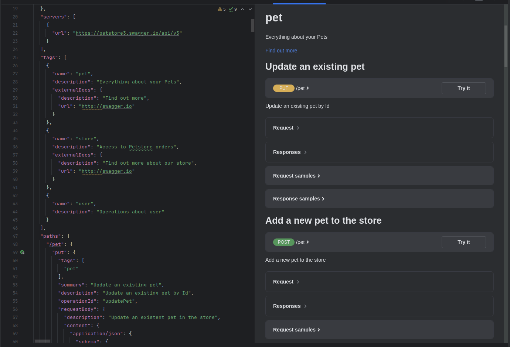
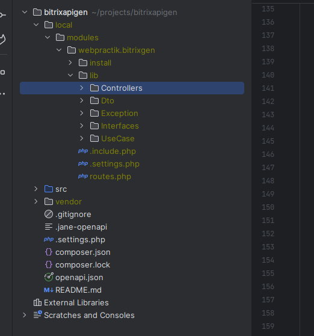
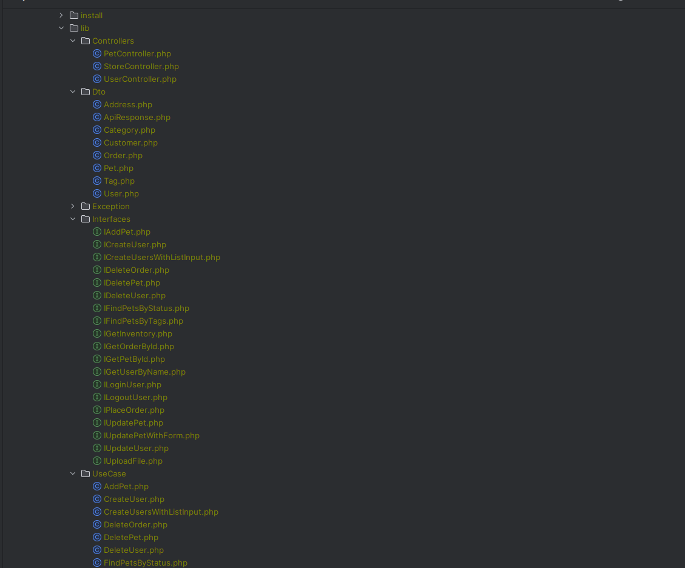
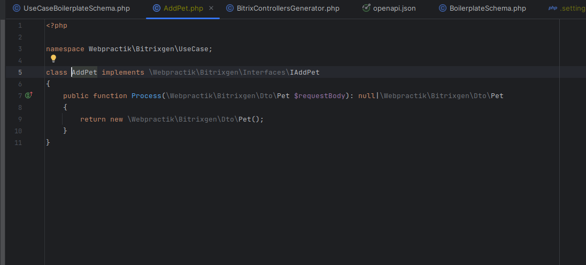
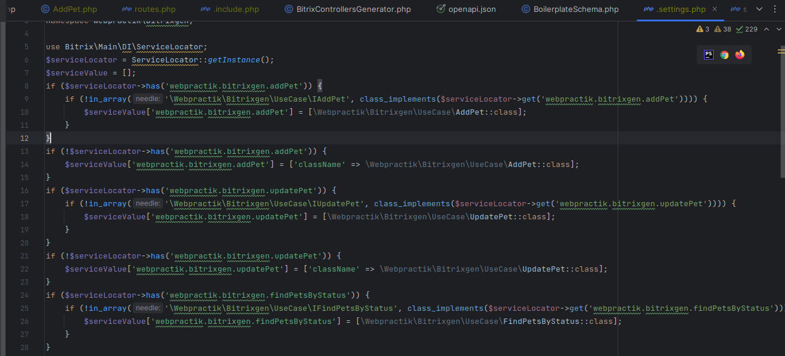

Shower Presentation Engine
Yours Truly, Famous Inc.
Bitrix code gen
Пакет для генерации серверного кода по OA контракту
Чем вызвана необходимость написать пакет
Желанием не тратить время на написание шаблонного кода
Желанием гарантировать исполнение контракта со стороны бэка
Желанием быстро генерировать моковые контроллеры по спецификации от аналитиков
Желанием делегировать бойлерплейт автоматике и сосредоточиться на БЛ
Входные данные
Спецификация OA в json/yaml формате
Развернутый битрикс
Порядок работы
Положить json файл в корень
Установить пакет
php vendor/src/bin/bitrixapigen generate

Что будет на выходе
Сгенерированный модуль webpractik.bitrixgen
Контроллеры, сгенерированные по тегам из OA
DTO
Интерфейсы для UseCase
UseCase


Важно
По умолчанию в сервис-локаторе будет зарегистрирован мок-класс


Важно
Чтобы переопределить класс на свой нужно зарегистрировать его ДО подключения этого модуля
Также в init.php ПОСЛЕДНИМ подключить модуль webpractik.bitrixgen
Roadmap
Тестирование
Генерация коллекций для возврата массива объектов
Генерация валидаций
Генерация ошибок и логика их обработки в контроллере
Генерация тестов
Приветствуется контрибьютинг
Конец